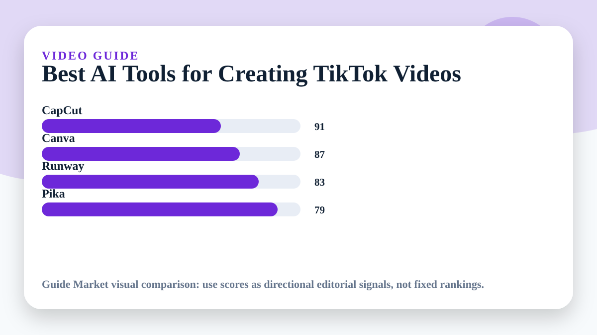
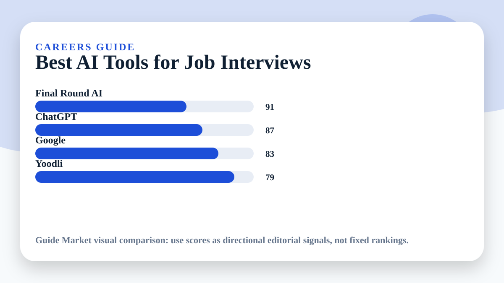
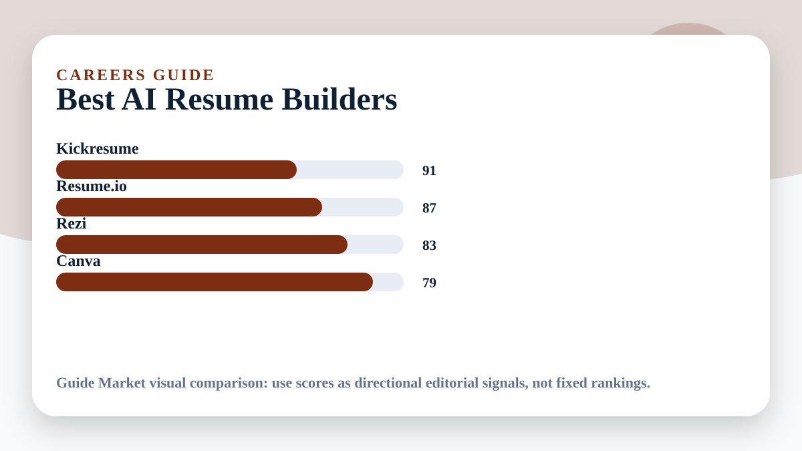
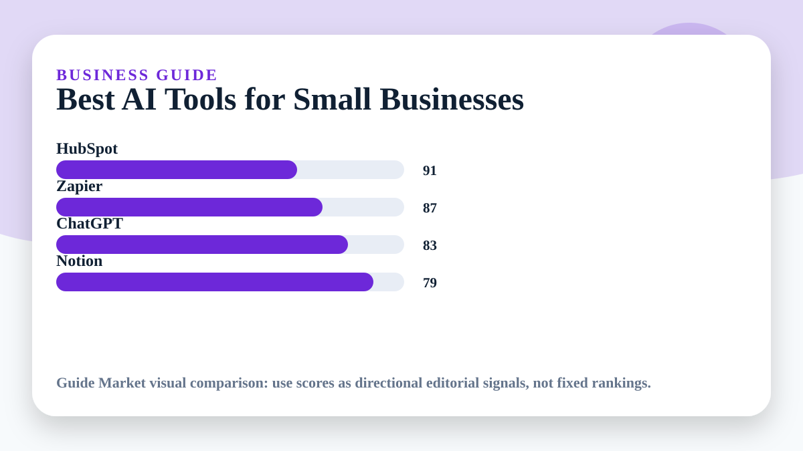
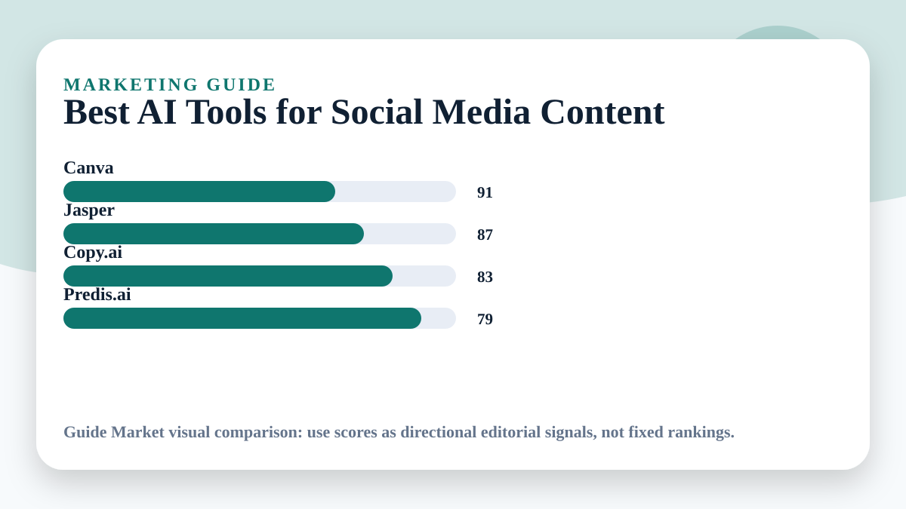
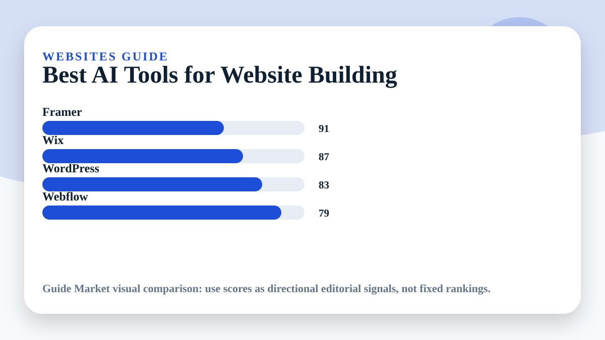
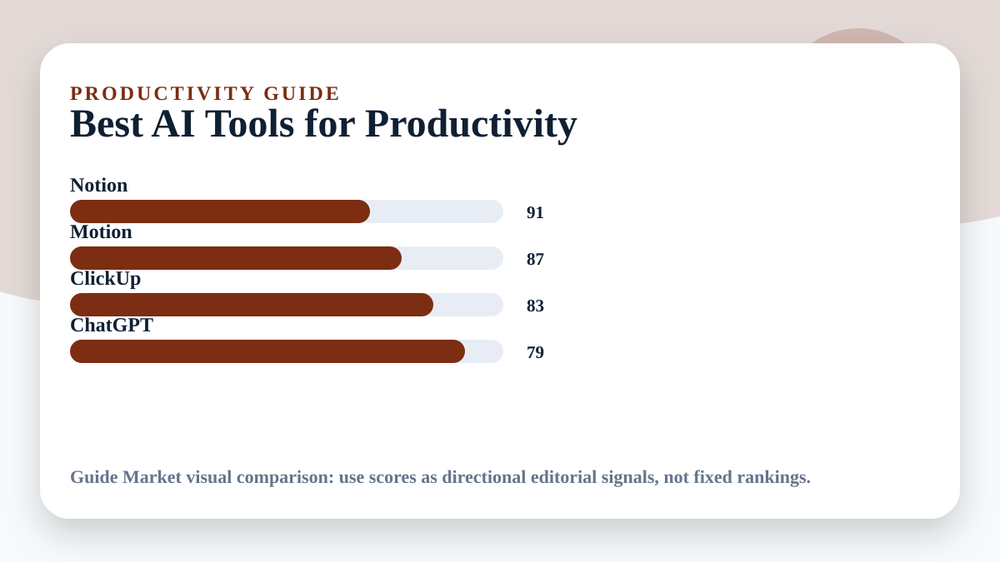
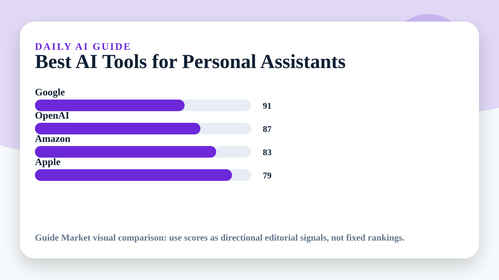
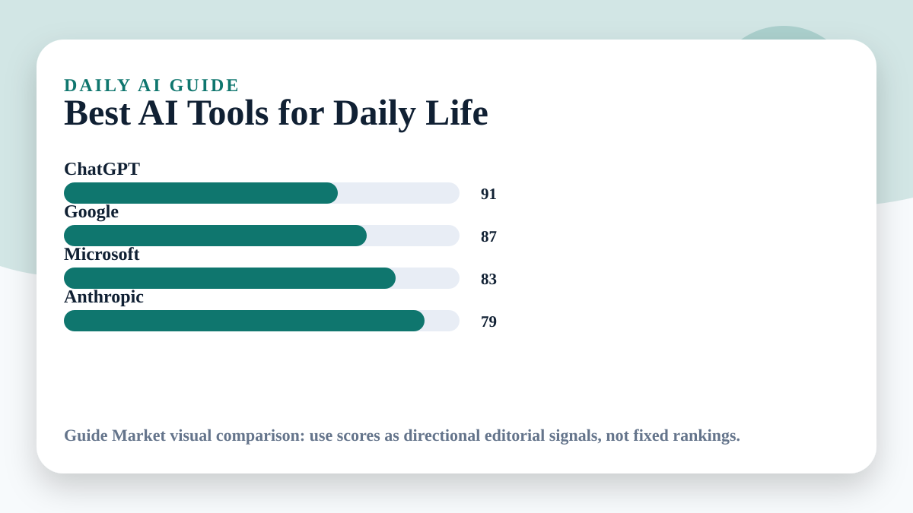

Articles
AI tools guides
Choose an article and compare the best AI tools for that specific task.
 Travel
TravelBest AI Tools for Travel Planning
Plan smarter trips without spending hours comparing tabs.
 Fitness
FitnessBest AI Tools for Gym Workouts
Build training plans that fit your body, time, equipment, and goals.
 Food
FoodBest AI Apps for Meal Planning
Turn meals into a repeatable system instead of a daily decision problem.
 Education
EducationBest AI Tools for Students
Study with more structure, better explanations, and fewer lost hours.
 Education
EducationBest AI Tools for Studying Faster
Combine active recall, summaries, and spaced repetition into a simple study workflow.
 Learning
LearningBest AI Tools for Learning Languages
Practice a language every day with feedback, repetition, and real conversation.
 Money
MoneyBest AI Tools for Budgeting Money
Make money decisions easier by turning spending into visible patterns.
 Travel
TravelBest AI Tools for Finding Cheap Flights
Find better flight options by comparing timing, flexibility, and alerts.

VideoBest AI Tools for Creating TikTok Videos
Move from idea to short-form video faster without losing creative control.
 Design
DesignBest AI Tools for Making Presentations
Build clearer decks with better structure, visuals, and narrative flow.
WritingBest AI Tools for Writing Essays
Improve essay planning, drafting, editing, and clarity without outsourcing your thinking.

CareersBest AI Tools for Job Interviews
Practice interviews with realistic prompts, feedback, and stronger answers.

CareersBest AI Resume Builders
Create a resume that is clear for recruiters and easier for systems to parse.

BusinessBest AI Tools for Small Businesses
Run leaner operations by automating repetitive work and improving customer communication.

MarketingBest AI Tools for Social Media Content
Produce more consistent social content while keeping a recognizable brand voice.
Best AI Tools for Logo Design
Create a stronger first visual identity before investing in a full design system.

WebsitesBest AI Tools for Website Building
Launch better websites faster with no-code builders and AI-assisted structure.

ProductivityBest AI Tools for Productivity
Reduce friction in daily work by connecting notes, calendars, tasks, and decisions.

Daily AIBest AI Tools for Personal Assistants
Use voice and AI assistants to handle recurring tasks with less manual effort.

Daily AIBest AI Tools for Daily Life
Use AI as a practical everyday helper for planning, learning, writing, and decisions.